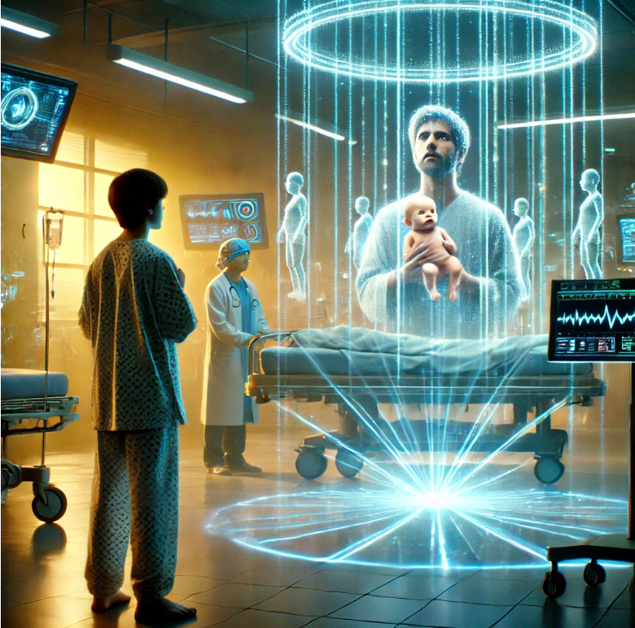

Scene 1: Ania Singing in the Rain
Ania, standing under a glowing streetlight, sings "Mafia - Imię Deszczu" while a soft drizzle falls around her. The night is dark, illuminated by distant neon signs, and her voice resonates with haunting beauty. The raindrops glisten like diamonds, reflecting the deep emotions in her song.

Scene 2: Volleyball Duel with Two Balls
The Polish and Brazilian volleyball teams face off in an intense match where both sides serve simultaneously, introducing two balls into play. The crowd roars in confusion and excitement as players skillfully manage the chaos. The arena vibrates with energy, and the players' agility becomes the centerpiece of this surreal game.

Scene 3: Crystallize Dance
Seba plays the saxophone in the center of a group of dancers, their movements synchronized to Lindsey Stirling's "Crystallize." Meanwhile, Bartek drifts his BMW M5 in perfect circles around them on the icy pavement. Neon lights illuminate the scene, creating an electric atmosphere.

Scene 4: Time Travel to the Pyramid of Cheops
The group finds themselves transported to ancient Egypt, where the Pyramid of Cheops is under construction. To their surprise, the workers are aided by advanced alien technology, quantum computers, and artificial intelligence. The scene shifts between ancient tools and futuristic holograms, blending two eras into one.

Scene 5: Programming Hackathon
The team gathers in a futuristic underground lab, surrounded by holographic screens displaying code. They collaborate on a revolutionary ecological AI project while battling against a malicious cyberattack. The tension builds as their programming skills are pushed to the limit.

Scene 6: Cyril and Maryjo's Musical Showdown
A grand concert arena hosts a dazzling musical showdown. Cyril and Maryjo take center stage, their melodies intertwining in an epic duet. The audience is spellbound, and holographic visuals add a mesmerizing layer to the performance.

Scene 7: Bartek's Return to 1997
Bartek travels back to 1997, finding himself in a nostalgic setting filled with retro vibes. The streets are alive with the sounds of old-school dance music, and Bartek relives his youth with a sense of wonder and excitement.
Scene 8: 1997 Bartek Meets 2011
Bartek from 1997 is transported to 2011, witnessing the birth of his son Wiktor. The emotional moment is heightened by the surreal juxtaposition of his younger self observing the life-changing event.

Scene 9: Epic Fight on Berlin's Tegel Runway
On the runway of Berlin's Tegel Airport, Wiktor and Torpeda engage in an epic battle under the glow of the runway lights. The fight is intense, blending martial arts and acrobatics as the cold air adds an extra layer of drama.

Scene 10: Fatima Cathedral Encounter
In the serene setting of Fatima Cathedral, Bartek kneels in prayer, channeling the intensity of a hitman in a confessional. Suddenly, Beata and Wiktor from 2011 appear, sparking a heartfelt reunion filled with emotion and reflection.

Scene 11: Winter Concert and Drift Show
On a snowy evening at Opolanka's parking lot, Seba delivers a mesmerizing saxophone concert while Wiktor, Beata, and a mysterious brunette execute breathtaking car stunts around him. The scene culminates in a synchronized performance of music and motion.